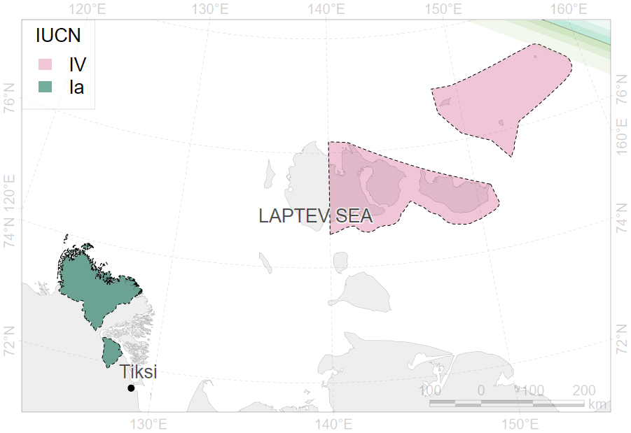

layout: true .banner[ .logo.remarkonly[  ] .shorttitle[ [N. Platonov: Russian updates](#home) .white[[üåê](#polarmap)] ] ] --- name: home class: metadata customtitle middle left giphy .sidebar.left-column[ # [Management](#H6c09c) # [Research](#H19d27) # [Other activity ](#He32c0) ] .mainbar.right-column[ .author[.photo.belikov[Belikov S. E.]] .institute[All-Russian Research Institute for Environment Protection] .author[.photo.kochnev[Kochnev A. A.]] .institute[Institute of Biological Problems of the North, Far East Branch, Russian Academy of Sciences] .author[.photo.platonov[Platonov N. G.], Mordvintsev I. N., Naidenko S. V.] .institute[A. N. Severtsov Institute of Ecology and Evolution, Russian Academy of Sciences] .author[Mizin I. A.] .institute[¬†"Russian Arctic" National Park] .author[Babiy U. V., Vailyev D. V.] .institute[State Nature Reserve "Wrangel Island"] .author[Chernook V. I.] .institute[Ecofactor] .author[Semenov A. A.] .institute[National Park "Lenskie Stolby"] .author[Krever O. V.] .institute[RoszapovedCenter] .title[Russian Updates] .subtitle[Management and Research on Polar Bears in Russia, 2022‚Äì2024] .what[20<sup>th</sup> Working Meeting of the IUCN/SSC Polar Bear Specialist Group] .where[Seattle, WA, USA] .when[2023-06-12 .updated[Updated: 2024-06-03 14:37]] ] --- name: polarmap class: znotable .remarkonly[ .backtoshow[ <a href="javascript:window.history.back();">↩</a> ] .generalmap[ <div class="figure"> <div class="framed" style="height:656px; width=100%"> <iframe src="assets/widget_unnamed-chunk-1_1b4129760598f8bf57767ffc3f92f8ec.html" width="100%" height="656" class="ursa-widgetize"></iframe> </div> </div> ] ] --- name: H6c09c .sidebar.left-column[ # [Management](#H6c09c).fg[] ## [Legislative basis](#H6c09c).fg[].bg[] ### [Federal laws](#H0c125) ### [Regulations](#Hda208) ### [Authority](#ministry) ### [New regulations](#H327d1) ## [Implementation](#ecology) # [Research](#H19d27) # [Other activity ](#He32c0) ] .mainbar.right-column[ Federal laws: + "On Protection of the Environment" (2002) + constituents "Red Data Book of the Russian Federation" + "On Wildlife" (1995) + prohibits any actions that affects adversely on Red Data Book animals The polar bear is listed in the Red Data Book of the Russian Federation <a name=cite-RedBook2021></a>([{KK RF}, 2021](#bib)). This edition is after 20 years after previous <a name=cite-RedBook2001></a>([Danilov-Danil ʹyan, 2001](#bib)). ] --- name: H0c125 .sidebar.left-column[ # [Management](#H6c09c).fg[] ## [Legislative basis](#H6c09c).fg[] ### [Federal laws](#H0c125).fg[].bg[] ### [Regulations](#Hda208) ### [Authority](#ministry) ### [New regulations](#H327d1) ## [Implementation](#ecology) # [Research](#H19d27) # [Other activity ](#He32c0) ] .mainbar.right-column[ + ¬´On Environment Protection¬ª + ¬´On Fauna¬ª + ¬´On Specially Protected Natural Areas (Protected Areas)¬ª + The Criminal Code of the Russian Federation ] --- name: Hda208 .sidebar.left-column[ # [Management](#H6c09c).fg[] ## [Legislative basis](#H6c09c).fg[] ### [Federal laws](#H0c125) ### [Regulations](#Hda208).fg[].bg[] ### [Authority](#ministry) ### [New regulations](#H327d1) ## [Implementation](#ecology) # [Research](#H19d27) # [Other activity ](#He32c0) ] .mainbar.right-column[ + The Basics of State Policy in the field of Environmental Development .approved[approved by the President] + Strategy for the Development of the Arctic Zone .approved[approved by the President] + Strategy for the Conservation of Rare and Endangered Animals, Plants and Fungi .approved[approved by the Government] + The Red Data Book of rare and endangered animals of the Russian Federation ([{KK RF}, 2021](#bib)), after ([Danilov-Danil ʹyan, 2001](#bib)). .approved[approved by the Ministry of Natural Resources and Environment in 2020] ] --- name: ministry .sidebar.left-column[ # [Management](#H6c09c).fg[] ## [Legislative basis](#H6c09c).fg[] ### [Federal laws](#H0c125) ### [Regulations](#Hda208) ### [Authority](#ministry).fg[].bg[] ### [New regulations](#H327d1) ## [Implementation](#ecology) # [Research](#H19d27) # [Other activity ](#He32c0) ] .mainbar.right-column[ + Ministry of Natural Resources and Environment .approved[ Development of state policy and legal regulation in the field of study, use, reproduction and protection of natural resources Federal institutions (FSBIs) for management on 233 federal specially protected natural areas (PAs) Development of PAs Network Supervision of [national project ¬´Ecology¬ª](#ecology) ] + Federal Supervisory Natural Resources Management Service .approved[ Control and supervision of environmental management Management of federal PAs out of FSBIs authority ] + Regional authorities .approved[ Management of regional PAs ] ] --- name: H327d1 .sidebar.left-column[ # [Management](#H6c09c).fg[] ## [Legislative basis](#H6c09c).fg[] ### [Federal laws](#H0c125) ### [Regulations](#Hda208) ### [Authority](#ministry) ### [New regulations](#H327d1).fg[].bg[] ## [Implementation](#ecology) # [Research](#H19d27) # [Other activity ](#He32c0) ] .mainbar.right-column[ .pulling[ .pull-left-50[ Under the Red Data Book ([{KK RF}, 2021](#bib)), polar bears in Russia are segregated into three different populations: Kara-Barents Sea population, Laptev Sea population, Alaska-Chukotka population. In <span class="hovertext" data-hover="Ministry of Natural Resources and Environment">Ministry</span> there are significant steps to replace "population" term to "subpopulation" for consistence with IUCN terms. ] .pull-right-50[ <div class="figure" style="text-align: center"> <img src="assets/pb-strategy2010.png" alt="Adopted from Polar Bear Strategy (2010)" width="1330" height="568" class='aspect torussian' /> <p class="caption">Adopted from Polar Bear Strategy (2010)</p> </div> ] ] ] --- name: ecology .sidebar.left-column[ # [Management](#H6c09c).fg[] ## [Legislative basis](#H6c09c) ## [Implementation](#ecology).fg[] ### [<span class="hovertext" data-hover="National project ¬´Ecology¬ª">Project "Ecology"</span>](#ecology).fg[].bg[] #### [Expert Section](#expert) #### [Strategy](#strategy) #### [Roadmap](#roadmap) #### [Action plan](#actionplan) #### [Funding](#Hbf740) ### [Protected areas](#H541ee) # [Research](#H19d27) # [Other activity ](#He32c0) ] .mainbar.right-column[ Federal project ¬´Conservation of biodiversity and ecotourism development¬ª, managed by budgetary institution "Roszapovedcenter" under [Ministry of Natural Resources and Environment](#ministry) Objects: polar bear and 12 other priority species Activity: Working Group divided on [Polar Bear Expert Section](#expert) and 12 other species specific expert sections + "[Roadmaps](#roadmap)" for priority species conservation + Development of conservation [strategies](#strategy) and recovery programs for priority species + "Business and Biodiversity" initiative to involve funding from commercial companies ] --- name: expert .sidebar.left-column[ # [Management](#H6c09c).fg[] ## [Legislative basis](#H6c09c) ## [Implementation](#ecology).fg[] ### [<span class="hovertext" data-hover="National project ¬´Ecology¬ª">Project "Ecology"</span>](#ecology).fg[] #### [Expert Section](#expert).fg[].bg[] #### [Strategy](#strategy) #### [Roadmap](#roadmap) #### [Action plan](#actionplan) #### [Funding](#Hbf740) ### [Protected areas](#H541ee) # [Research](#H19d27) # [Other activity ](#He32c0) ] .mainbar.right-column[ #### .header[Polar bear expert section] About 30 members Regular meetings to discuss the most important issues and prepare documents. Special meetings for decision making in extraordinary cases ] --- name: strategy .sidebar.left-column[ # [Management](#H6c09c).fg[] ## [Legislative basis](#H6c09c) ## [Implementation](#ecology).fg[] ### [<span class="hovertext" data-hover="National project ¬´Ecology¬ª">Project "Ecology"</span>](#ecology).fg[] #### [Expert Section](#expert) #### [Strategy](#strategy).fg[].bg[] #### [Roadmap](#roadmap) #### [Action plan](#actionplan) #### [Funding](#Hbf740) ### [Protected areas](#H541ee) # [Research](#H19d27) # [Other activity ](#He32c0) ] .mainbar.right-column[ #### .header[Strategy for polar bear conservation] Approved in 2022 with horizons up to 2030. Lorem nam ornare augue tristique ac praesent scelerisque? Platea accumsan ligula eu platea; sodales ligula. Velit aptent ornare venenatis non netus. Lectus magna sed turpis purus pellentesque ‚Äì urna viverra himenaeos metus, morbi varius, nisi pretium nam felis, pretium eu mattis orci id facilisis enim sociosqu velit! ] --- name: roadmap .sidebar.left-column[ # [Management](#H6c09c).fg[] ## [Legislative basis](#H6c09c) ## [Implementation](#ecology).fg[] ### [<span class="hovertext" data-hover="National project ¬´Ecology¬ª">Project "Ecology"</span>](#ecology).fg[] #### [Expert Section](#expert) #### [Strategy](#strategy) #### [Roadmap](#roadmap).fg[].bg[] #### [Action plan](#actionplan) #### [Funding](#Hbf740) ### [Protected areas](#H541ee) # [Research](#H19d27) # [Other activity ](#He32c0) ] .mainbar.right-column[ #### .header[Road map for polar bear conservation measures] Adipiscing quisque montes, lacus parturient a, fermentum gravida massa mattis quis! Feugiat malesuada diam eget cursus ridiculus tempus odio commodo tempor. In dapibus a risus magna, ultricies dictumst in lacinia. Ullamcorper facilisis hendrerit, felis curae viverra sagittis phasellus. Vehicula suspendisse, fringilla curae nunc per tortor. Taciti cubilia mus leo donec, at augue; parturient etiam hendrerit fermentum sociis ultricies nullam dui inceptos nec porta. ] --- name: actionplan .sidebar.left-column[ # [Management](#H6c09c).fg[] ## [Legislative basis](#H6c09c) ## [Implementation](#ecology).fg[] ### [<span class="hovertext" data-hover="National project ¬´Ecology¬ª">Project "Ecology"</span>](#ecology).fg[] #### [Expert Section](#expert) #### [Strategy](#strategy) #### [Roadmap](#roadmap) #### [Action plan](#actionplan).fg[].bg[] #### [Funding](#Hbf740) ### [Protected areas](#H541ee) # [Research](#H19d27) # [Other activity ](#He32c0) ] .mainbar.right-column[ #### .header[Action Plan on polar bear conservation] Sit pulvinar leo leo accumsan semper, litora eget platea. Porttitor congue feugiat vulputate curabitur ac suscipit laoreet blandit torquent ‚Äì lacus auctor fames. Sociis quisque, vel cursus lacus enim, nisi ut tellus! Hendrerit iaculis sollicitudin: rutrum ligula tristique sem suspendisse gravida, sagittis penatibus at mollis. ] --- name: Hbf740 .sidebar.left-column[ # [Management](#H6c09c).fg[] ## [Legislative basis](#H6c09c) ## [Implementation](#ecology).fg[] ### [<span class="hovertext" data-hover="National project ¬´Ecology¬ª">Project "Ecology"</span>](#ecology).fg[] #### [Expert Section](#expert) #### [Strategy](#strategy) #### [Roadmap](#roadmap) #### [Action plan](#actionplan) #### [Funding](#Hbf740).fg[].bg[] ### [Protected areas](#H541ee) # [Research](#H19d27) # [Other activity ](#He32c0) ] .mainbar.right-column[ <div class="grViz html-widget html-fill-item" id="htmlwidget-7d8c78da024e2f78e593" style="width:1330px;height:568px;"></div> <script type="application/json" data-for="htmlwidget-7d8c78da024e2f78e593">{"x":{"diagram":"digraph {\n\ngraph [layout = dot, rankdir = LR]\n\nnode [fontname = \"Roboto\", shape = rectangle, style = filled, fillcolor = Linen]\n\ngovernment [label = \"Government\n(Budgetary)\", shape = folder, fillcolor = Beige]\ncommercial [label = \"Non-government\n(Extrabudgetary)\", shape = folder, fillcolor = Beige]\n\n# budget [label = \"Budgetary\", shape = folder, fillcolor = Beige]\n# external [label = \"Extrabudgetary\", shape = folder, fillcolor = Beige]\n\nnational [label = \"National\ncompanies\"]\ninternational [label = \"International\ncompanies\", fillcolor = Red]\n\nnature [label = \"Ministry\nof Nature\"]\nscience [label = \"Ministry\nof Science\"]\nauthority [label = \"Authorities\"]\nkrever [label = \"Services\"]\n\nPA [label = \"Protected\nAreas\"]\nresearches [label = \"Researches\"]\nwwf [label = \"WWF\", fillcolor = Red]\nRFFI [label = \"Scientific Funds\", fillcolor = Red]\nRNF [label = \"Scientific Funds\"]\nemployer [label = \"Employer\n(Institute)\"]\n\n# budget -> government\ngovernment -> {nature science}\n\n# {nature -> PA}\n\nscience -> employer -> researches\n\n# external -> commercial\n\ncommercial -> {national international wwf}\n\nnational -> researches\n\nnational -> krever\n\nnature -> {krever authority} -> PA\n\nscience -> {RFFI RNF}\n\nRNF -> researches\n\n}","config":{"engine":"dot","options":null}},"evals":[],"jsHooks":[]}</script> ] --- name: H541ee .sidebar.left-column[ # [Management](#H6c09c).fg[] ## [Legislative basis](#H6c09c) ## [Implementation](#ecology).fg[] ### [<span class="hovertext" data-hover="National project ¬´Ecology¬ª">Project "Ecology"</span>](#ecology) ### [Protected areas](#H541ee).fg[].bg[] #### [Russian Arctic](#Hb7966) #### [Wrangel Island](#H0b3d2) #### [Bear Islands](#Hcb7bc) #### [Gydansky](#He0e20) #### [Taimyr](#H7e1e5) #### [Ust-Lensky](#Hf7796) # [Research](#H19d27) # [Other activity ](#He32c0) ] .mainbar.right-column[ <div class="figure" style="text-align: center"> <img src="assets/epa.png" alt="Compiled by Systematic Conservation Consultancy" width="1330" height="568" aspect /> <p class="caption">Compiled by Systematic Conservation Consultancy</p> </div> [üåê](#polarmap) ] --- name: Hb7966 .sidebar.left-column[ # [Management](#H6c09c).fg[] ## [Legislative basis](#H6c09c) ## [Implementation](#ecology).fg[] ### [<span class="hovertext" data-hover="National project ¬´Ecology¬ª">Project "Ecology"</span>](#ecology) ### [Protected areas](#H541ee).fg[] #### [Russian Arctic](#Hb7966).fg[].bg[] #### [Wrangel Island](#H0b3d2) #### [Bear Islands](#Hcb7bc) #### [Gydansky](#He0e20) #### [Taimyr](#H7e1e5) #### [Ust-Lensky](#Hf7796) # [Research](#H19d27) # [Other activity ](#He32c0) ] .mainbar.right-column[ #### .header[National park 'Russian Arctic'] <img src="assets/epa-rusarc.png" width="1330" height="500" bound style="display: block; margin: auto;" /> .pulling[ .pull-left-70[ + Maternal den distribution ] .pull-right-30[ [üåê](#polarmap) ] ] ] --- name: H0b3d2 .sidebar.left-column[ # [Management](#H6c09c).fg[] ## [Legislative basis](#H6c09c) ## [Implementation](#ecology).fg[] ### [<span class="hovertext" data-hover="National project ¬´Ecology¬ª">Project "Ecology"</span>](#ecology) ### [Protected areas](#H541ee).fg[] #### [Russian Arctic](#Hb7966) #### [Wrangel Island](#H0b3d2).fg[].bg[] #### [Bear Islands](#Hcb7bc) #### [Gydansky](#He0e20) #### [Taimyr](#H7e1e5) #### [Ust-Lensky](#Hf7796) # [Research](#H19d27) # [Other activity ](#He32c0) ] .mainbar.right-column[ #### .header[State reserve 'Wrangel Island'] <img src="assets/epa-wrangel.png" width="1330" height="500" bound style="display: block; margin: auto;" /> .pulling[ .pull-left-70[ + Maternal den distribution + Ground and aerial surveys ] .pull-right-30[ [üåê](#polarmap) ] ] ] --- name: Hcb7bc .sidebar.left-column[ # [Management](#H6c09c).fg[] ## [Legislative basis](#H6c09c) ## [Implementation](#ecology).fg[] ### [<span class="hovertext" data-hover="National project ¬´Ecology¬ª">Project "Ecology"</span>](#ecology) ### [Protected areas](#H541ee).fg[] #### [Russian Arctic](#Hb7966) #### [Wrangel Island](#H0b3d2) #### [Bear Islands](#Hcb7bc).fg[].bg[] #### [Gydansky](#He0e20) #### [Taimyr](#H7e1e5) #### [Ust-Lensky](#Hf7796) # [Research](#H19d27) # [Other activity ](#He32c0) ] .mainbar.right-column[ #### .header[State reserve 'Medvezhie Ovstrova'] <img src="assets/epa-medvezh.png" width="1330" height="500" bound style="display: block; margin: auto;" /> .pulling[ .pull-left-70[ + Maternal den distribution + Ground and aerial surveys ] .pull-right-30[ [üåê](#polarmap) ] ] ] --- name: He0e20 .sidebar.left-column[ # [Management](#H6c09c).fg[] ## [Legislative basis](#H6c09c) ## [Implementation](#ecology).fg[] ### [<span class="hovertext" data-hover="National project ¬´Ecology¬ª">Project "Ecology"</span>](#ecology) ### [Protected areas](#H541ee).fg[] #### [Russian Arctic](#Hb7966) #### [Wrangel Island](#H0b3d2) #### [Bear Islands](#Hcb7bc) #### [Gydansky](#He0e20).fg[].bg[] #### [Taimyr](#H7e1e5) #### [Ust-Lensky](#Hf7796) # [Research](#H19d27) # [Other activity ](#He32c0) ] .mainbar.right-column[ #### .header[State reserve 'Gydansky'] <img src="assets/epa-gyda.png" width="1330" height="500" bound style="display: block; margin: auto;" /> .pulling[ .pull-left-70[ Planning survey in 2025 ] .pull-right-30[ [üåê](#polarmap) ] ] ] --- name: H7e1e5 .sidebar.left-column[ # [Management](#H6c09c).fg[] ## [Legislative basis](#H6c09c) ## [Implementation](#ecology).fg[] ### [<span class="hovertext" data-hover="National project ¬´Ecology¬ª">Project "Ecology"</span>](#ecology) ### [Protected areas](#H541ee).fg[] #### [Russian Arctic](#Hb7966) #### [Wrangel Island](#H0b3d2) #### [Bear Islands](#Hcb7bc) #### [Gydansky](#He0e20) #### [Taimyr](#H7e1e5).fg[].bg[] #### [Ust-Lensky](#Hf7796) # [Research](#H19d27) # [Other activity ](#He32c0) ] .mainbar.right-column[ #### .header[State reserve 'Zapovedniki Taimyra'] <img src="assets/epa-taimyr.png" width="1330" height="500" bound style="display: block; margin: auto;" /> .pulling[ .pull-left-70[ Planning survey in 2024 ] .pull-right-30[ [üåê](#polarmap) ] ] ] --- name: Hf7796 .sidebar.left-column[ # [Management](#H6c09c).fg[] ## [Legislative basis](#H6c09c) ## [Implementation](#ecology).fg[] ### [<span class="hovertext" data-hover="National project ¬´Ecology¬ª">Project "Ecology"</span>](#ecology) ### [Protected areas](#H541ee).fg[] #### [Russian Arctic](#Hb7966) #### [Wrangel Island](#H0b3d2) #### [Bear Islands](#Hcb7bc) #### [Gydansky](#He0e20) #### [Taimyr](#H7e1e5) #### [Ust-Lensky](#Hf7796).fg[].bg[] # [Research](#H19d27) # [Other activity ](#He32c0) ] .mainbar.right-column[ #### .header[State reserve 'Ust-Lensky' and state preserve 'New Siberian islands']  .pulling[ .pull-left-70[ Aerial survey 2021 "Master of the Arctic" Planning surveys in 2025 ] .pull-right-30[ [üåê](#polarmap) ] ] ] --- name: H19d27 .sidebar.left-column[ # [Management](#H6c09c) # [Research](#H19d27).fg[].bg[] ## [Seropositivity](#Hb1e7e) # [Other activity ](#He32c0) ] .mainbar.right-column[ <img src="assets/uicn.png" width="1330" height="568" autoheight style="display: block; margin: auto;" /> [üåê](#polarmap) Scientific research projects on polar bears were conducted by individual scientific institutions and non-governmental organizations. ] --- name: Hb1e7e .sidebar.left-column[ # [Management](#H6c09c) # [Research](#H19d27).fg[] ## [Seropositivity](#Hb1e7e).fg[].bg[] # [Other activity ](#He32c0) ] .mainbar.right-column[ .pulling[ .pull-left-50[ Pathogens: + Canine distemper virus + Herpes simplex virus + Parvovirus + Toxoplasma + Trichinella (*Trichinella sp.*) + Mycoplasma (*Mycoplasma sp.*) + Candida (*Candida sp.*) + Chlamydia (*Chlamydia sp.*) ] .pull-right-50[ <img src="assets/naidenko-map.png" width="1330" height="568" aspect style="display: block; margin: auto;" /> ] ] Seropositive animals have been identified for Canine distemper virus and Trichinella. The proportion of seropositive animals to Trichinella was the maximal. Over the last 10 years, an increased share of animals seropositive to Trichinella and Canine distemper virus has been noted in the Barents Sea area <a name=cite-Naidenko2023_en></a>([Naidenko et al., 2023](#bib)). ] --- name: He32c0 .sidebar.left-column[ # [Management](#H6c09c) # [Research](#H19d27) # [Other activity ](#He32c0).fg[] ## [Internatiaonal Cooperation](#He32c0).fg[].bg[] ## [Popularization](#H12a81) ## [National Cooperation](#Hc97ef) ] .mainbar.right-column[ ### U.S.-Russian Frozen ### Norway-Russian Frozen ### ArcNet Ref to pub ] --- name: H12a81 .sidebar.left-column[ # [Management](#H6c09c) # [Research](#H19d27) # [Other activity ](#He32c0).fg[] ## [Internatiaonal Cooperation](#He32c0) ## [Popularization](#H12a81).fg[].bg[] ## [National Cooperation](#Hc97ef) ] .mainbar.right-column[ ## .header[Popularization, Education] + Annual international "Polar bear universe" conference. + "Clean seas" and their "Vacation in the Arctic" bus + Series of lectures in Pavilion 75 in Exhibition of Achievements of National Economy, photographic exhibition ¬´Golden tortoise¬ª All of these are desirable to invite youth to the science. ] --- name: Hc97ef .sidebar.left-column[ # [Management](#H6c09c) # [Research](#H19d27) # [Other activity ](#He32c0).fg[] ## [Internatiaonal Cooperation](#He32c0) ## [Popularization](#H12a81) ## [National Cooperation](#Hc97ef).fg[].bg[] ] .mainbar.right-column[ S.Е. Belikov, All-Russian Research Institute for Environment Protection, Znamenskoye-Sadki, Moscow, 113628, Russian Federation А.N. Boltunov, Marine Mammal Council (regional non-governmental organization) М.V. Gavrilo, Russian Arctic National Park А.А. Kochnev, Institute of Biological Problems of the North, Far East Branch, Russian Academy of Sciences I.N. Mordvintsev, A.N. Severtsov Institute of Ecology and Evolution, Russian Academy of Sciences N.G. Platonov, A.N. Severtsov Institute of Ecology and Evolution, Russian Academy of Sciences V.V. Rozhnov, A.N. Severtsov Institute of Ecology and Evolution, Russian Academy of Sciences ] --- name: acknowledgements background-image: url(https://resizer.mail.ru/p/3eb6a11d-d049-500a-b297-318caa02927b/AQACFSn_iihJZ0CR295bZiZ3FJgJA5WRYHeKFctK5rVp5dGUyKB5ljR7tWOb2my6gsNu3xWRHKUS1Nvq-mvI6lUCqhw.jpg) background-position: right top background-repeat: no-repeat background-size: 447px .sidebar.left-column[ # [Management](#H6c09c) # [Research](#H19d27) # [Other activity ](#He32c0) ] .mainbar.right-column[ .pulling[ .pull-left-45[ Thank you .footer[ Bibliography in Russian were transliterated using [ICU](https://unicode-org.github.io/icu/userguide/transforms/general/) "russian-latin/bgn" transform. ] ] .pull-right-55[ ] ] ] --- name: bib layout: false class: notable Moskva: FGBU "VNII Ekologiya". 1128 pp. URL: URL: [http://www.sevin.ru/redbook](http://www.sevin.ru/redbook) .footnote.small.bibliography[ <div class="backtoshow"><a href="javascript:window.history.back();">↩</a></div> **** <a name=bib-RedBook2021></a>[KK RF](#bib) (2021). _Krasnaya kniga Rossiyskoy Fyederatsii_. 2nd ed. Vol. Tom "Zhivotnyye". [https://vniiecology.ru/wp-content/uploads/2022/03/krasnaya_kniga_RF_Animals_for_print.pdf](https://vniiecology.ru/wp-content/uploads/2022/03/krasnaya_kniga_RF_Animals_for_print.pdf) (visited on Jun. 11, 2022). <a name=bib-RedBook2001></a>[Danilov-Danil ʹyan, V. I., ed.](#bib) (2001). _Krasnaya kniga Rossiyskoy Fyederatsii (zhivotnyye)_. RAN. Moskva: AST: Astrel ʹ. 862 pp. ISBN: 5-17-005792-X. (visited on Oct. 20, 2020). <a name=bib-Naidenko2023_en></a>[Naidenko, S. V., P. S. Klyuchnikova, E. A. Ivanov, I. N. Mordvintsev, N. G. Platonov, A. I. Isachenko, R. E. Lazareva, and V. V. Rozhnov](#bib) (2023). "Occurrence of Pathogens in the Barents Sea Polar Bear (_Ursus maritimus_) Subpopulation". In: _Biology Bulletin_ 50.9, p. 2454‚Äì2459. ISSN: 1608-3059. DOI: [10.1134/s106235902309025x](https://doi.org/10.1134%2Fs106235902309025x). ]